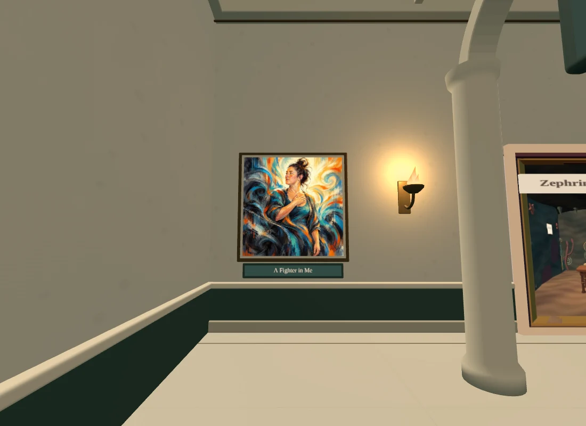
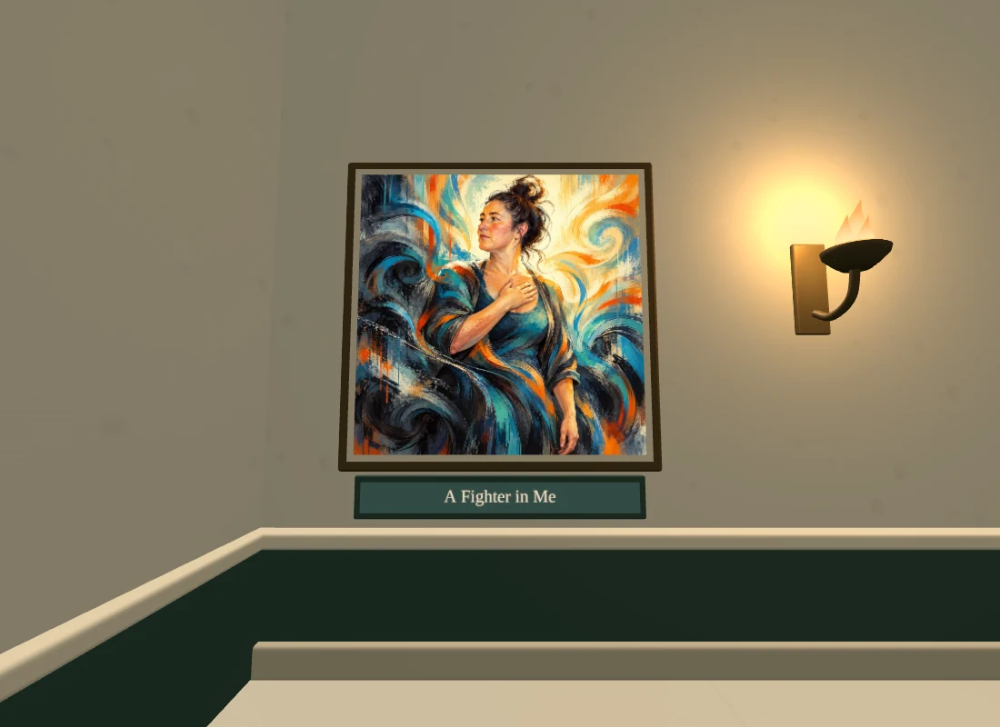
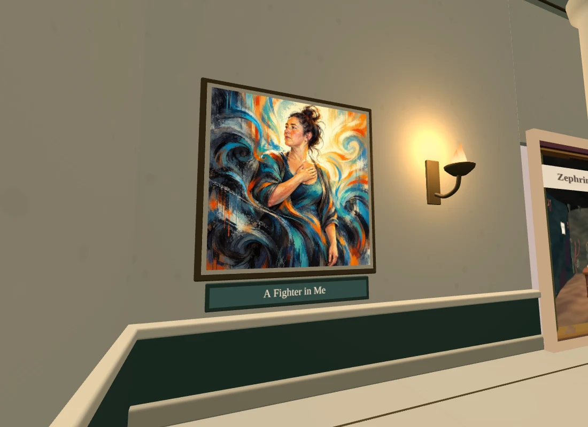
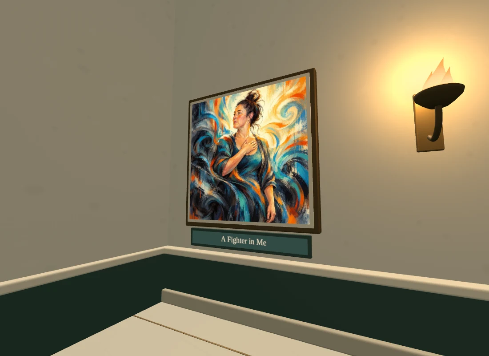
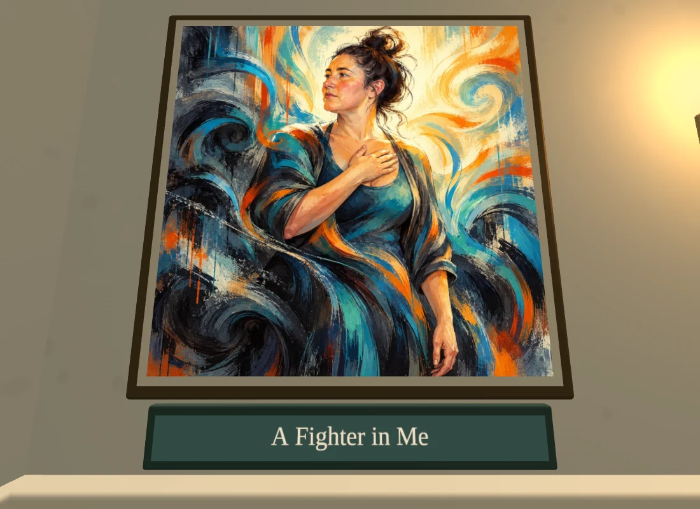
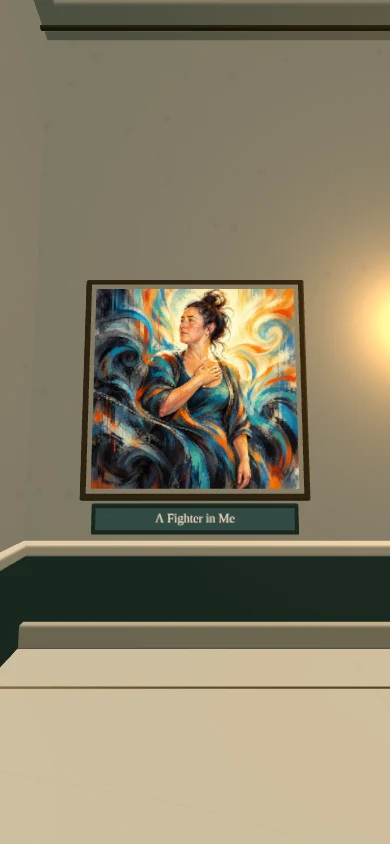
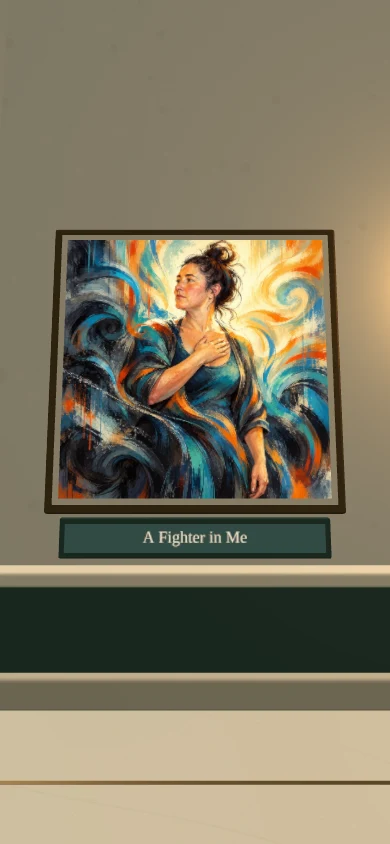
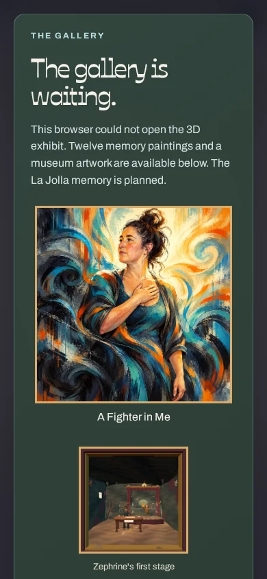
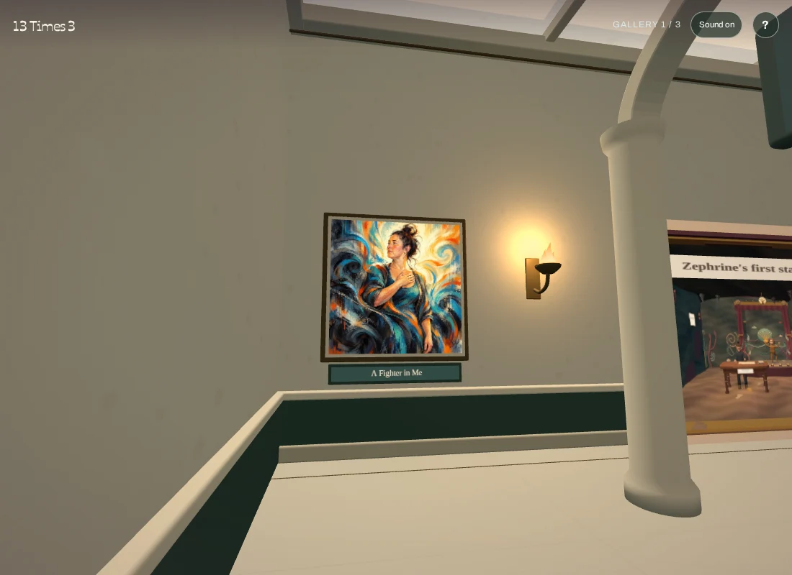
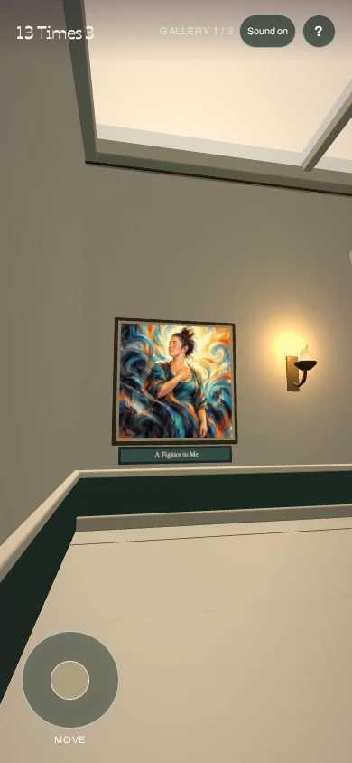

A Fighter in Me
A static entrance painting about Jane’s resilience through depression, in the original 13times3 gallery’s abstract expressionist style. Cream paper, dark contours and teal, cobalt, orange and gold currents frame her steady posture and raised gaze. The exact title is a separate museum plaque.
Made with built-in imagegen using two original gallery images as style references and a private Jane reference for likeness. Reference photographs and their metadata are excluded. The former still life is unhung; no portal room or frame assignment changes.
Final painting · Complete prompt · Verification and hashes
Finished GPU captures document visual review separately from functional checks. Desktop and fresh portrait loads, artwork loading, wall collision, accessible title, fallback and optional Help passed. All 34 tests and site/packed-geometry checks passed. Portrait testing uses browser emulation; physical-phone performance is unmeasured.

From across the entrance gallery
Normal walking distance
Left oblique view
Right oblique view
Close view
Fresh portrait view
Portrait close view
No-WebGL portrait fallbackPublished as bc1dd8d10ad68fcc54e3d7e86648ea4aef7f1090 in Pages run 40115350782. Normal production HTML, app, stylesheet, painting and Credits match the reviewed bytes. Fresh production desktop and portrait views load and display the artwork.

Production desktop
Production portrait emulation